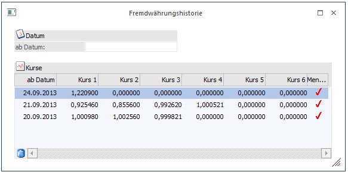
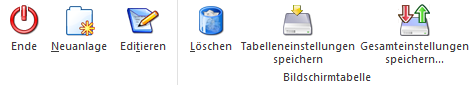

Wurde im Fremdwährungsstamm ein "gültig ab" Datum eingetragen, werden die Kurse gespeichert und können über diese Fremdwährungshistorie abgerufen werden. Hier wird auch angezeigt, in welcher Notierung ein Kurs gespeichert wurde.

Es kann nach dem "ab Datum" eingeschränkt werden.
Beim Laden eines Kurses im Fremdwährungsstamm können die Kurse, die Einheit, das Datum und die Notierung editiert werden. Das geöffnete Fremdwährungshistoriefenster wird bei Veränderungen automatisch aktualisiert.
Welche der 6 Kurse in der Historie angezeigt werden sollen, kann im WinLine START unter Optionen / FIBU Parameter gesteuert werden.
Buttons

Ø Ende
Das aktuelle Fenster wird geschlossen.
Ø Neuanlage
Der Fremdwährungsstamm wird geöffnet und die entsprechende Fremdwährung geladen.
Ø Editieren
Der Fremdwährungsstamm wird geöffnet und der ausgewählte Kurs geladen.
Ø Löschen
Der ausgewählte Kurs wird gelöscht.
Ø Tabelleneinstellungen speichern
Die Spalten einer Tabelle können grundsätzlich an beliebige Positionen verschoben, bzw. in der Breite entsprechend angepasst werden. Durch Anwahl des Buttons "Tabelleneinstellungen speichern" werden die Einstellungen benutzerspezifisch gespeichert und bei dem nächsten Aufruf des Programmpunktes wieder vorgeschlagen.
Ø Gesamteinstellungen speichern
Im Gegensatz zu "Tabelleneinstellungen speichern" können mit "Gesamteinstellungen speichern" mehrere Tabellenaufbauten gespeichert und nach Wunsch geladen werden. Zusätzlich werden Sonderfunktionen der Tabelle (z.B. "Spalte gruppieren") ebenfalls bei der Speicherung bedacht.